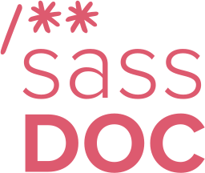

Sass fire is an open source collection of Sass utility functions
inspired by reading the Ramda docs and source code. However this
project is more an exploration into learning by doing.
(It's named after the evolution of man discovering fire. Plus
emoji's are cool, right?)
Why?
✅I believe reading source code gives a developer a deeper
understanding of the libraries they're using.
✅Dependencies should be researched. Adding 3rd party libraries
to a project can result in shipping bloat to a user.
✅This isn't only about frontend. To create an open source
package we also need to consider project documentation and
infrastructure.
✅Experiment with some tech I'm not familiar with.
✅Learn something new and have fun along the way!
Am I crazy? :D
Potentially. If I want to use Ramda to build CSS
frameworks the quickest route is to use PostCSS.
I'm not the only one to think of doing this. David Khourshid
wrote SassDash (a port of Lodash to Sass) a few years ago.
According to github insights - SassDash is currently used by 176
repositories and 28 packages.
Goals
✅I would like a Sass library that matches (as closely as
possible) the utilities Ramda provides.
✅I would like a website that documents the library storing a
history for every version of the package released.
✅I would like a pipeline for automated publishing and updating of
documentation.
Down the rabbit hole we go...
The Sass library
Sass
Compiles SCSS files to CSS.
Test runner
Combined with SASS-TRUE for testing SCSS.

DocBlockr
Use comments to generate documentation.
Stylelint
Our linter to keep our code looking smart.
Pick a method from Ramda
1. Copy the test over and update the syntax to run in Sass
True.
///
/// Takes a predicate and a list and returns a pair of filterable lists of the same type of
/// elements which do and do not satisfy, the predicate, respectively.
///
/// @group list
/// @param {Function} pred A predicate to determine which side the element belongs to.
/// @param {Array} filterable the list to partition.
/// @return {Array} An array, containing first the subset of elements that satisfy the
/// predicate, and second the subset of elements that do not satisfy.
/// @see filter
/// @see reject
///
@function partition($pred, $filterable) {
$satisfy: ();
$dissatisfy: ();
@each $item in $filterable {
$truthy: if(call(get-function($pred), $item), true, false);
@if $truthy {
$satisfy: append($satisfy, $item);
} @else {
$dissatisfy: append($dissatisfy, $item);
}
}
@return ($satisfy, $dissatisfy);
}
The documentation site
DocBlockr
Parse source code comments to generate docs.
Gatsby
Static site generator using React and GraphQL.
Mineral-ui
React component library.
👩🎤
Emotion
CSS-in-JS library for custom styles.
The approach...
Generate JSON documentation
Write a Node script utilising Sassdoc to output JSON.
Push JSON into Gatsby
Use Gatsby's json source plugin to parse generated JSON.
Create React Template
Create template using Mineral-ui components to render
documentation.
GraphQL -> React
Use GraphQL query to get all nodes from JSON and push into the
template.
The result...
The documentation site looks 🍬 thanks to Gatsby and
Mineral-ui.
GraphQL allowed me to quickly add features like search and version selection
once the script to generate the JSON was written.
❌ It probably comes as no surprise that Sass is not really
geared up for this... Ramda is all about currying. Sass cannot
return a function from a function. Sorry. :(
❌ Anonymous functions don't exist in Sass. So I have to create
named functions to provide some functionality. This means I have
to store references to functions in globals to access them
later.
✅ By making use of Sass-True and Jest I could code using test
driven development.
✅ Refreshed my knowledge of Sass. Maybe you can teach an old dog
new tricks! :D
The documentation learnings
✅ Gatsby is amazing. Scaffold a site in minutes with pluggable
data management (GraphQL + gatsby source plugins) and a view
layer (React) that makes it very simple to put sites together.
✅/❌ Mineral-ui felt efficient to begin with. But became
frustrating later on when trying to customise certain parts. Ex.
a layout component sets font-size.
❌ Easy to navigate documentation is key to adoption of any open
source project. I struggled a lot with Minerial-ui's docs.
The pipeline learnings
✅ Drone-ci uses docker in docker so it can use any image from
the docker hub community. This made creating steps like semantic
release a breeze.
✅ Semantic release generates release, changelog, publishes
package to npm, and adds comments on issues. ❤️
❌ Docker in Docker networking can be confusing.
✅ I have a CI server without any free tier limitations!!!!
**Gotcha** don't do like me and set a semantic-release plugin
without reading the docs. They don't extend they override
completely. 😬💥
Next Steps
I'm surprised how much fun I've had with this little project. I
plan to bring as much usefulness from ramda to this library.
Expand the docs with a cookbook! Some examples of how a developer
could use this to write a framework might help onboarding.
I could package the sassdoc script I wrote as a gatsby source
plugin. Maybe a sass dev somewhere could use it? 🤷♂️